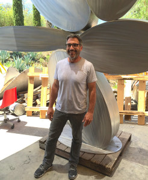

1959
“If we are to engage in the project of self-edification, the evolution of self, the enterprise is tied to our imagination.
As Richard Rorty indicates, imagination is bound by our vocabulary, and it is in the growth of vocabulary we should focus.
Vocabulary is tied to experience, and it is in energized moments of exposure to strangeness that our vocabulary expands.
Encountering strangeness stretches and expands our self-image and seeds the rich potential for our collective conversations.”
Born:
Riverside, California
Residence:
Los Angeles, California
Education:
Stanford University, Stanford, California
University of Sao Paulo, Sao Paulo, Brazil
Individual Exhibitions
2022
Recent Sculptures, Caldwell Snyder Gallery, Montecito, California
2019
Wishful Thinking, Caldwell Snyder Gallery, St. Helena, California
2017
Second Nature, Galerie Uli Lang, Biberach, Germany
2016
Jarding de Reverie, Pacific Design Center, West Hollywood,California
Brad Howe Invitational, Gallery Jeon, Daegu, South Korea
System of Shared Risk, Galerie Uli Lang, Biberach, Germany
2015
Working Fictions, Caldwell Snyder Gallery, San Francisco, California
Cartography, CMay Gallery, Seoul, Korea
2014
Shadow Economy, Museum of Art and History, Lancaster, California
Concoctions, The Frostig Collection, Santa Monica, California
2013
Docile Bodies, Caldwell Snyder Gallery, San Francisco, California
Deprivato, Katherine Cone Gallery, Los Angeles, California
Coyote, Galerie Uli Lang, Biberach, Germany
2012
Kinetic Works, The Frostig Collection, Santa Monica, California
Sculpture & Kinetic Art, Soohoh Gallery, Seoul, South Korea
Sculpture, Galerie Janos, Paris, France
2011
Construct, Galerie Uli Lang, Biberach, Germany
2010
Primavernica, AndrewShire Gallery, Los Angeles, California
Sculturen, Mobiles und Mandalas, Galerie
Kaysser, Munich, Germany
Giocare con la Scultura, Art 1307, Napoli, Italy
2008
Brad Howe, Alexander Mertens Fine Art, Montecito, California
Sculpture, College of The Canyons, Santa Clarita, California
2007
At This Moment, Sculpturesite Gallery, San Francisco, California
Strata, Museum of Design, Art and Architecture, Culver City, California
Stainless Steel Sculpture, Galerie Uli Lang, Biberach, Germany
Skulpturen Und Objekte, Galerie Kaysser, Munich, Germany
2006
The Next Dimension, Hamilton-Selway Fine Art, Hollywood, California
New Work, Parchman Stremmel Gallery, San Antonio, Texas
Monoliths, Galerie Holm, Ulm, Germany
Tectonics, Galerie Uli Lang, Biberach, Germany
Steps in Serious Exuberance, Skulpturengalerie, Zurich, Switzerland
2005
A Survey of Color, Form and Motion, Rosenthal Fine Art, Chicago, Illinois
In Collaboration, Adamar Fine Art, Miami, Florida
Synchrony, Galerie Uli Lang, Biberach, Germany
2002
Stahlplastiken, Galerie Uli Lang, Biberach, Germany
2001
Steel Haiku, Jernigan Wicker Fine Arts, San Francisco, California
2000
Neo Modernism, Boritzer/Gray/Hamano Gallery, Santa Monica,California
Biscotto, Jernigan Wicker Fine Arts, San Francisco, California
1999
Esculturas, Praxis Arte Internacional, Mexico City, Mexico
Aquatica, Boritzer/Gray/Hamano Gallery, Santa Monica, California
1997
Drift, Boritzer/Gray/Hamano Gallery, Santa Monica, California
1996
Flats & Risers, Diane Nelson Gallery, Laguna Beach, California
Causes, Arario Gallery, Cheoan-Shi, South Korea
1995
Boias, Galeria Nara Roesler, Sao Paulo, Brazil
1994
Hop The Twig, Boritzer/Gray/Hamano Gallery, Santa Monica, California
Selected Group Exhibitions
2022
reFORMED, James Gallery, Pittsburgh, PA
Axiom. Alex Couewnberg, Brad Howe, SCAPE Gallery, Corona Del Mar, California
Salon Redux, David Klein Gallery, Detroit, Michigan
Fun Gal Gro Up Sho, Gallery SADE, Los Angeles, California
2020
Trooping the Colours, Brad Howe, Michelle Benoit, Galerie Uli Lang, Biberach, Germany
2019
XIII Bienal de la Habana 2019, Havana, Cuba Brad Howe, Michelle Benoit, Eduardo Vega de Seoane, Thomas Punzmann Contemporary, Frankfurt, Germany
Fractured Beauty, Alisa Henriquez, Andy Krieger, Brad Howe, David Klein Gallery, Detroit, Michigan
2018
The Pearly Gates Collection, Yucca Valley Visual and Performing Arts Center, Yucca Valley, California
Bauhaus Club, Contemporary Cluster, Rome, Italy
Disturbances, Art 1307, Naples, Italy
2017
On The Road: American Abstraction, David Klein Gallery, Detroit, Michigan
2016
20, Zetaeffe Galleria, Florence, Italy Properties of Light, George Billis Gallery, Los Angeles, California
Recent Work, Gallery Jones, Vancouver, Canada
2015
American Array, Honolulu Museum of Art, Honolulu, Hawaii
The Nature of Sculpture: Art in the Garden, Los Angeles County Arboretum, Arcadia, California
Farbe ist mein Motiv, Galerie Kaysser, Ruhpolding, Germany
Gerundet Umkriest, Gallery Foundation SBC Pro Arte, Biberach, Germany
2014
Blur the Lines, Brad Howe and Murakami Takashi, Asian Art Works, Busan, Korea
Farmhouse Logic: Brad Howe and Gary Komarin, Morrison Gallery, Kent, Connecticut
Bogen Schiessen, Museum Biberach, Biberach, Germany
2013
The Frostig Collection, Museum of Art and History, Lancaster, California
Rouge, Katherine Cone Gallery, Los Angeles, California
Brad Howe, Zachary Thornton, Lopez-Herrera, Thomas Punzman Fine Arts, Frankfurt, Germany
Gary Komarin and Brad Howe, Galerie Proarta, Zurich, Switzerland
Bunt, Galerie Kaysser, Ruhpolding, Germany
2012
TARFEST: 10th Anniversary Art Exhibition, LACMA, Los Angeles, California
Frostig at Large: In West Hollywood, West Hollywood, California
Color Balance, Marco Casentini and Brad Howe, Melissa Morgan Fine Art, Palm Desert, California
L'Art del Regal XII & Brad Howe, Esculture. Art Contemporani Nord-America, La Galeria, Barcelona, Spain Mouvement et Lumiere: Exposition de 85 Sculptures, La Fondation Villa Datris, Isle Sur La Sorgue, Vaucluse, France
2010
Malibu Sculpture 2010, A Summer Exhibition curated by Carl Scholsberg, Malibu Civic Center, Malibu, California
Tectonic-Ephemeral-Sensual: Sculpture and Jewelry, SPF: a Gallery, Culver City, California
Avesta Art 2010, Verket, Avesta, Sweden
2009
Five, Andrea Schwartz Gallery, San Francisco, California
A Happy Medium, Gilman Contemporary, Ketchum, Idaho
2008
Sculpture in Motion, Atlanta Botanical Garden, Atlanta, Georgia
Fusion, Gilman Contemporary, Ketchum, Idaho
2007
Keeping It Straight, Right Angles and Hard Edges in Contemporary Southern California, Riverside Museum of Art, Riverside, California
The El Paseo Invitational, Outdoor Sculpture Exhibition, Palm Desert, California
2006
L.A. Minimalism Today, Gallery C, Hermosa Beach, California
Primary Colors, Sculpturesite Gallery, San Francisco, California
2005
Touch Me, Gallery C, Hermosa Beach, California
2004
Nine, Gallery C, Hermosa Beach, California
Out of Plane: Light on White Maze, SPF: a Gallery, Culver City, California
2002
Pourquoi Pas, Galerie Janos, Paris, France
1999
Pier Walk 99, International Sculpture Exhibition, Chicago, Illinois
1998
Illusion, Riverside Art Museum, Riverside, California
1997
Grins, Humor and Whimsy in Contemporary Art, Millard Sheets Gallery, Pomona, California
1995
Edition FIAC/SAGA, Paris, France
1994
Group Show, Peter Blake Gallery, Laguna Beach, California
Big Littles, Boritzer/Gray/Hamano Gallery, Santa Monica, California
Pop into the '90s, Kass/Meridian Gallery, Chicago, Illinois
Busan Bienniale, Busan, South Korea
Selected Public & Corporate Collections
Allergan Corporation, Irvine, California
Arario Industries, Cheon-Shi, South Korea
Bachem California Inc., Torrance, California
Baxter Healthcare Corporation, Irvine, California
Beechcraft Corporation, Van Nuys, California
Birtcher Corporation, Irvine, California
Boehringer Ingelheim, Biberach, Germany
Boehringer Ingelheim, Ridgefield, Connecticut
Carl Bean AIDS Center, Los Angeles, California
Cedars-Sinai Hospital, Los Angeles, California
Chandler Properties, Los Angeles, California
City of Hope, Duarte, California
City of Montebello, Transportation Building, Montebello, California
City of Santa Fe Springs, California
City of West Hollywood, California
Colegio Nacional de Educacion Profesional Tecnica- Administrative Campus, Toluca, Mexico
Concord Property Corporation, San Antonio, Texas
Crocker Museum of Art, Sacramento, California
Cupertino Housing Partners, Cupertino, California
Duncan Aviation, Lincoln, Nebraska
Edificio Siglum, SARE Corporation, Mexico City, Mexico
Edison International, Rosemead, California
Edwards Lifesciences, Irvine, California
Eisenhower Medical Center, Rancho Mirage, California
Equity Office, Atlanta, Georgia
Georgia International Convention Center, Atlanta, Georgia
Heising-Simons Foundation, San Francisco, California
Hilton Caribe, San Juan, Puerto Rico
Honolulu Museum of Art, Honolulu, Hawaii
Houlihan Lokey, Los Angeles, California
Intuit, Reno, Nevada
Jesuit Dallas Museum, Dallas, Texas
Katell Properties, Los Angeles, California
Kaiser Permanente, Baldwin Park, California
Kitakyushu City International Center, Kitakyushu, Japan
Kimball International, Inc., Los Angeles, California
Kreissparkasse, Biberach, Germany
Lancaster Museum of Art and History, Lancaster, California
La Fundidora, Centro Cultural, Monterrey, NL, Mexico
Landesbank Baden-Wurttemberg, Stuttgart, Germany
Lockton Insurance, Los Angeles, California
Lord Baltimore Properties, Ontario, California
LARC Foundation, Saugus, California
Loyola Law School, Los Angeles, California
Medix Mihagino, Kitakyushu, Japan
Mercure Hotel, Sao Paulo, Brazil
M.G.M. Grand Airlines, JFK Airport, New York
Ministry of Industry and Trade Building, Mexico City, Mexico
M.I.T., Cambridge, Massachusetts
Murrel Company, Newport Beach, California
Neiman Marcus, Dallas, Texas
Nobe Telecommunications Corporation, Miami, Florida
Overton Moore and Associates Inc. Los Angeles, California
Pacific Medical Buildings, San Diego, California
Pasadena Museum of California Art, Pasadena, California
Princess Cruise Line, Sun Princess, Los Angeles, California
Raleigh Durham Airport, Raleigh, North Carolina
Royal Host, International Forum Building, Tokyo, Japan
Saks Fifth Avenue, USA
Samsung Corporation, Seoul, South Korea
Sand Hill Property Company, Sunnyvale, California
SAS Software Inc., Cary, North Carolina
Department of Commerce, Mexico City, Mexico
Straub Autovermietung Hertz, Biberach, Germany
Sudwestbank, Stuttgart, Germany
Stanford University, Palo Alto, California
Sysco Corporation, Houston, Texas
Temple University, Philadelphia, Pennsylvania
The Animation Guild, Burbank, California
The Diplomat Hotel, Hollywood, Florida
The Trenton Group, Los Angeles, California
Trinity University, San Antonio, Texas
UCLA Medical Center, Los Angeles, California
UCLA Anderson School of Business, Los Angeles, California
Union Bank, Carmel, California
Wheelock Inc., Singapore
Wheelock Inc., Hong Kong
Western Asset, Pasadena, California
Western Asset, Sao Paulo, Brazil
Xerox Corporation, Rochester, New York
Biblography
A Dance of Atoms, Brad Howe, Skira, Milan, 2022
California Homes, September/October 2020
Art Ltd. Magazine, Nov/Dec 2016, Woodland Hills, California, November 2016
University Hospitals, Artwork from the Collection of University Hospitals, Cleveland OH, 2016
Fabrik Magazine, Los Angeles, California, September 2016
Schwabische Zeitung, Passende Kombination fur Schemmerhofen, Germany, June 2014
Mouvement et Lumiere, #2 Exposition 2012, La Villa Datris, France, 2012
Urban Landscape Furniture, Hi-Design International Publishing, Hong Kong, 2012
Artweek LA (Vol. 74), Los Angeles, CA, April 30, 2012
Montecito Messenger, Montecito, CA USA, November 11 – 17, 2011
ZVW-Redaktion, Das Werthaltige am Blech, Stuttgart, Germany, November 6, 2010
Avanti, L’universo di Brad Howe, Rome, Italy, March 25, 2010
Casa Claudia, Editora Abril, Sao Paulo, Brazil, December 2009
Schwabische Zeitung, Germany, July 24, 2009
Luxe. Interiors + design, USA, Summer 2009
Arroyo Magazine, Pasadena, CA, March 2009
Sculpture Magazine, USA, September 2008
Architectural Digest, Germany, March 2008
Applaus, Kultur Magazin, Munich, Germany, November 2007
San Antonio Express News, San Antonio, Texas, October 22, 2006
Boehringer Ingelheim Zeitung, Ingelheim, Germany, June 6, 2006
Los Angeles Times, May 25, 2006
Schwabische Zeitung, Biberach, Germany, May 23, 2006
Gallery Guide, Chicago, May 2005
South Florida Business Journal, March 18-24, 2005
Angeleno Magazine, Los Angeles, California, September 2004
Wochenblatt, Germany, September 16, 2004
Architectural Digest, July 2004
Coast Magazine, Newport Beach, California, June 2004
Schwabische Zeitung, Biberach, Germany, July 2, 2002
El Nuevo Herald, Miami, Florida, September 29, 2001
Los Angeles Times, April 3, 2001
Los Angeles Times, September 8, 2000
The Orange County Register, September 7, 2000
Vice Versa, Mexico City, Mexico, April 2000
Serious Exuberance, Sculpture by Brad Howe, Noriega Editors, Mexico City, 1999
Reforma, Mexico City, Mexico, October 5, 1999
Free Expression, Vol. 4, House Design by Edward R. Niles, Images Publishing, 1998
San Francisco Examiner Magazine, September 20, 1998
International Herald Tribune, August 11, 1998
San Diego Times Tribune, August 11, 1998
New York Times, August 6, 1998
Chonan Culture Journal, Chonan, South Korea, 1996
Joongdo Focus Monthly Photo Journal, South Korea, September 1996
The Press-Enterprise, Riverside, California, January 18, 1996
Contemporary California Architects, Philip Jodidio, Taschen Publications, 1995
Florida Design (Vol. 5 No. 3), December 1995
Folha de Sao Paulo, Sao Paulo, Brazil, October 10, 1995
Jornal da Tarde, Sao Paulo, Brazil, October 10, 1995
Art Pictorial (Vol. 4), Tokyo, Japan, 1995
Mexico: Casas del Pacifico, Marie-Pierre Colle Corcuera, ALTI Publishing, 1994
Empowered Spaces; Architects & Designers At Home & At Work, 1993
El Nacional, Caracas, Venezuela, June 1993
Harper's Bazaar, January 1993
Mittwoch, Freiburg, Germany, March 20, 1991
Kultur Joker, Freiburg, Germany, March 1991
Dallas Morning News, January 6, 1991
Gallery Guide, California & Pacific NW, 1991
American Pop Culture Today Vol. 3, Japan, 1990
BusinessWeek, December 3, 1990
Veja Magazine, Brazil, November 28, 1990
Vogue Magazine, Mexico, August 1990
California Riviera Magazine, Laguna Beach, California, July 1990
Artension Magazine, Paris, May-June 1990
Los Angeles Times, December 29, 1989
Jornal do Brazil, Rio de Janeiro, Brazil October 3, 1989
Village View, Los Angeles, August 24, 1988
UPI, July 6, 1988
Los Angeles Times, December 20, 1987
Los Angeles Times, September 13, 1987
Orange County Magazine, California, March 1987
Vogue Magazine, Brazil, July 1986
Vogue Magazine, Brazil, May 1986
Revista de Domingo, Rio de Janeiro, Brazil, April 1986
Fatos Magazine, Brazil, May 1985
Brad Howe began his career in Brazil after studying history at the University of Sao Paulo. His work presents the influence of inquiry into the aesthetics of various cultures and distinct movements in the continuum of art history.
Howe's work continues to connect with international communities, exhibiting and completing site-specific commissions both in the US and abroad. Known for his sculpture practice, Howe’s focus also includes the representation of objects through diverse means, including photography.